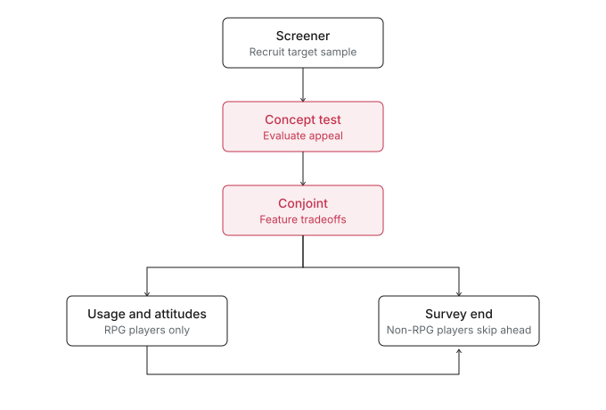
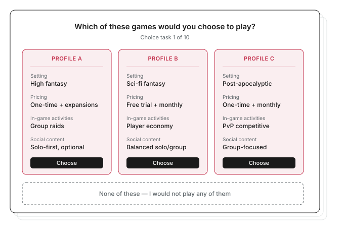

A take-home case study from a research role interview with the insights team at a major gaming company: design the survey for an upcoming RPG concept test.
Objectives and methodology were already aligned between the research and game teams, so my job was focused: turn four research goals into a survey where every section, skip, and quota earns its place.
The studio was exploring a new RPG title for PC and console and wanted to test the concept with players in North America and Europe. Four goals were set:
Method was set in advance: a quantitative online survey, 10–15 minutes, among NA and EU RPG players on PC or console.
I proposed N=1,000, split evenly across North America and Europe, with a 60/40 mix of RPG to non-RPG players in each. Including non-RPG players is deliberate: appeal beyond the core audience signals room to grow.
I built the survey in four sections, ordered to keep respondents fresh and unbiased. Concept exposure and the conjoint come first; the Usage & Attitudes (U&A) section, covering habits and motivations, comes last so it doesn't color how players react to the concept.

Fig. 1: The four-section flow, from screener to Usage & Attitudes.
I used conjoint analysis to find which feature combinations drive preference and to test the studio's tradeoffs, especially around pricing and social content, where the design direction was still split.
| Attribute | Levels |
|---|---|
| Setting | High fantasy · Sci-fi fantasy · Post-apocalyptic |
| Pricing Model | Free trial + monthly subscription · One-time purchase + monthly subscription · One-time purchase + paid expansions |
| In-Game Activities | Challenging group raids · Player economy with crafting/trading · PvP and competitive play |
| Social Content | Solo-first with optional group play · Balanced solo and group content · Group-focused progression |

Fig. 2: An example conjoint choice task. Players pick one game profile or none.